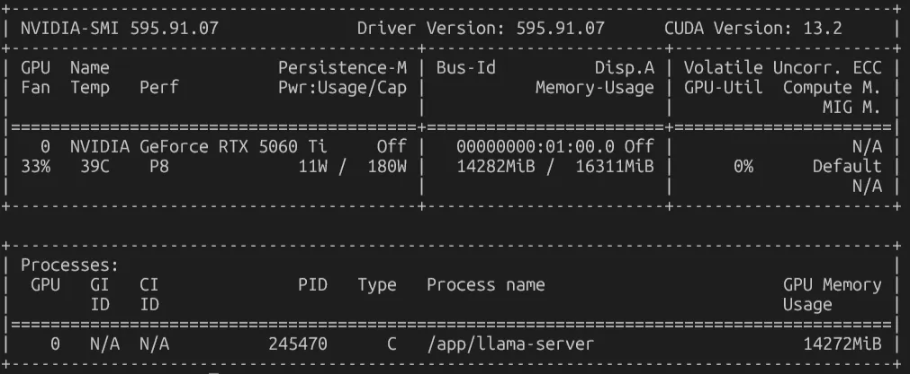
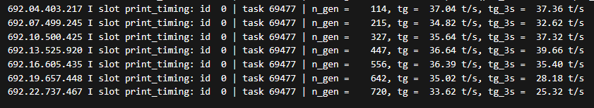

IA local para datos clínicos en un servidor de bajo presupuesto
Desarrollamos un sistema de IA local para trabajar con datos clínicos sin que salgan del edificio: un pequeño servidor con una GPU de 16 GB, modelos open weight como Qwen 27B y un stack que garantiza la trazabilidad, la seguridad y la disponibilidad del servicio.
Hablemos de tu proyectoDe un vistazo
- Antes
Sin IA disponible para datos clínicos
Los datos clínicos no podían salir del edificio, así que no era posible apoyarse en servicios de IA en la nube para las tareas de desarrollo.
- Ahora
IA local en un pequeño servidor
Un servidor con una GPU de 16 GB, dentro de un presupuesto muy ajustado, que ejecuta modelos open weight y cuenta con un stack que asegura la trazabilidad del dato, su seguridad y la disponibilidad del servicio.
- Resultado
- 25–50 tokens/scon un modelo open weight de 27B (Qwen, denso)
- ≈1.200 €presupuesto de todo el servidor
- 100 %del dato clínico permanece dentro del edificio
- Trazabilidad, seguridad y disponibilidadaseguradas por el stack del sistema
Contexto
Para utilizar datos clínicos se necesitaba una instalación de IA local: el dato no podía salir, así que la IA tenía que estar dentro del edificio.
Desarrollamos un sistema de IA local sobre un pequeño servidor, con un presupuesto muy ajustado, que garantice la trazabilidad del dato, su seguridad y la disponibilidad del servicio.
Problema
Las tareas de desarrollo trabajaban con datos clínicos que no podían salir del edificio: enviarlos a un servicio de IA en la nube no era una opción viable.
Además, la solución tenía que caber en un presupuesto muy ajustado (en torno a 1.200 €) y, aun así, ser capaz de ejecutar un modelo grande con garantías de trazabilidad, seguridad y disponibilidad del servicio.
Solución
Diseñamos y montamos el sistema de IA local sobre un pequeño servidor. El trabajo incluyó:
- Montaje de un pequeño servidor con una GPU NVIDIA RTX Geforce 5060 Ti de 16 GB de VRAM, dentro de un presupuesto muy ajustado (en torno a 1.200 €).
- Despliegue de modelos open weight, como Qwen 27B (denso), que ejecutamos con velocidades de 25–50 tokens por segundo.
- Creación de un stack que asegura la trazabilidad del dato, su seguridad y la disponibilidad del servicio.
- Conexión a las herramientas de trabajo del equipo: GitHub Copilot, Opencode, agentes y chatbots, que consumen el modelo local a través de la API del servidor.
- Puesta en servicio para tareas de desarrollo donde el dato no puede salir del edificio.


Es el tipo de trabajo que hacemos en IA privada y automatización.
Resultados
El equipo trabaja en sus tareas de desarrollo con datos clínicos que no salen nunca del edificio: la IA corre en un servidor propio, con un modelo open weight de 27B que responde a 25–50 tokens por segundo.
El stack del sistema asegura la trazabilidad del dato, su seguridad y la disponibilidad del servicio, y todo el conjunto cabe en un presupuesto en torno a los 1.200 €.
Otros casos de éxito
Empieza por una conversación de treinta minutos
Cuéntanos qué necesitas y te decimos honestamente si podemos ayudarte.